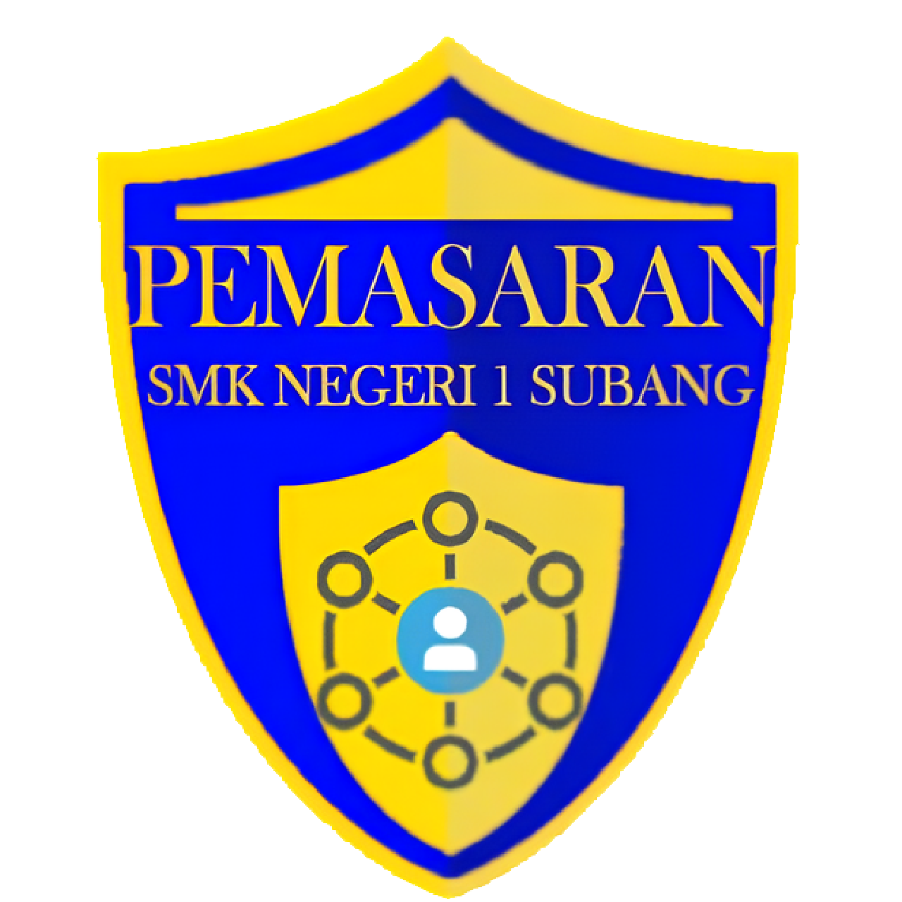

Bisnis Daring dan Pemasaran
Deskripsi
Pemasaran adalah kompetensi keahlian yang mempelajari dasar-dasar kemampuan serta keilmuan menjadi seorang marketing, dimana siswa akan mempelajari ilmu dasar marketing, pengadministrasian barang, bisnis retail, serta kemampuan praktik penjualan.
Kompetensi Dasar
- Marketing
- Perencanaan Bisnis
- Komunikasi Bisnis
- Penataan Produk
- Bisnis Online
- Administrasi Transaksi
- Pengelolaan Bisnis Ritel
- Produk Kreatif dan Kewirausahaan
Tujuan Pembelajaran
Tujuan Program Keahlian Bisnis Daring dan Pemasaran secara umum mengacu pada isi Undang-Undang Sistem Pendidikan Nasional (UU SPN) pasal 3 mengenai Tujuan Pendidikan Nasional, dan penjelasan pasal 15 yang menyebutkan bahwa pendidikan kejuruan merupakan pendidikan menengah yang mempersiapkan peserta didik terutama untuk bekerja dalam bidang tertentu. Secara khusus, tujuan Kompetensi Keahlian Bisnis Daring dan Pemasaran adalah membekali peserta didik dengan keterampilan, pengetahuan dan sikap agar kompeten dalam:
- Menerapkan dan mengembangkan kemampuan berkomunikasi baik lisan maupun tertulis dengan relasi
dengan memperhatikan norma dan lingkungan masyarakat; - Menerapkan dan mengembangkan kemampuan teknologi informasi untuk melaksanakan tugas secara
efektif dan efisien; dan mengembangkan kemampuan untuk merencanakan, melaksanakan,
mengorganisasi, dan mengevaluasi tugas yang menjadi tanggungjawabnya; - Menerapkan dan mengembangkan kemampuan dalam mengelola sistem kerja dalam bisnis ritel;
- Menerapkan dan mengembangkan pelayanan terhadap konsumen sehingga diperoleh manfaat
masing-masing pihak; - Menerapkan dan mengembangkan kemampuan mengelola administrasi keuangan sehingga segala
aspek keuangan dapat dilaporkan dan dipertanggungjawabkan; - Menerapkan dan mengembangkan kemampuan di bidang IT sesuai dengan perkembangan era digital
dimana bisnis online menjadi salah satu kemmpuan yang harus dimiliki oleh peserta didik dan Standar
Operational Procedur (SOP) di Dunia Usaha/Industri.
Tenaga Pengajar Produktif
- Hj. Chairzawati, S.E.
- Dra. Hj. Yuyun Yuningsih
- Ismaela, S.E.
- Dra. Carsih
- Siti Halimah, S.Pd.
- Heni Juwita Sasntosa, S.Pd.
- Dian Maelani, S.Pd.
- Surlem, S.Pd
- Reza Pratama Putra, S.Pd.
- Meilita Nurhasanah, S.Pd.
- Asep Ramdan Taufiq, S.Pd.
- Setysih, S.E.
- Dian Murdianan, S.Pd.
Institusi Pasangan
 |
 |
 |